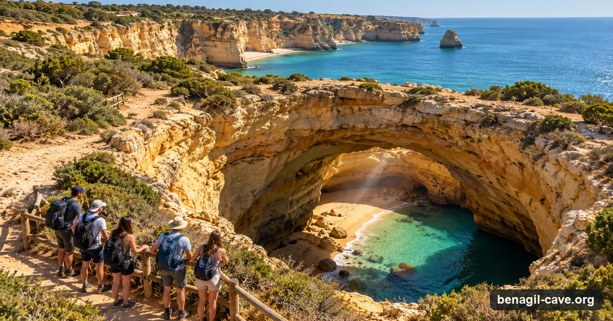

Benagil is about 60 km west of Faro, roughly 45 minutes by road, and no boat runs there from Faro. So a Benagil tour from Faro is a day trip by van, and most of them never get on the water: they walk the clifftop and look down through the skylight. If being inside the cave is the point, check the boat line before you book.
Independent picks · Bookings via GetYourGuide (we may earn a commission) · Updated 4 October 2026

An illustration, not a photo. Most day trips from Faro see Benagil like this, from the clifftop path, without a boat.
~45 minBy road to the cave coast
2 of 7Day trips that go on the water
$46Clifftop day, from
7Bookable online
From Faro
Boat or clifftop: the choice the listings bury
Faro sits on the Ria Formosa lagoon, east of the cave coast, and its boats work the lagoon, not Benagil. Every Benagil option from Faro is a day trip by road. What matters is what happens when you get there.
Most trips walk part of the Seven Hanging Valleys trail, the clifftop path between Praia da Marinha and Vale de Centianes, and stop where it passes the cave's round skylight. You look down into the cave instead of up out of it. Two trips on our list go on the water: a small boat from Armação de Pêra, and a guided kayak. Under the 2024 rules a boat gets about two minutes inside and a guided kayak group up to eight.
You want to see it from the water
Take the boat day: a van from Faro station, then a small boat off the beach at Armação de Pêra along the caves to Benagil and Praia da Marinha, sea permitting. It has its own calendar below.
You want the view and a walk
Take a clifftop day. The biggest has more than 3,000 reviews, the cheapest is $46, and you see the skylight from above plus Marinha and Algar Seco. No boat, no swell worries. See the clifftop days.
You can paddle
The kayak day adds a one-hour guided paddle into the cave from the beach. It is the longest time inside you can get. See it in the list.
Logistics
Getting there & parking
The essentials
Meeting point: Central Faro. Each tour names its own spot, from the marina and the train station to the Largo de São Pedro; it is on your booking.
Time to the cave: About 45 minutes by road (roughly 60 km, mostly on the A22). On the boat trip, the boat itself boards off the beach at Armação de Pêra, 15 to 25 minutes from the cave.
Driving yourself: Faro to Benagil is about 60 km. With a car you can skip the van and take a boat from Carvoeiro or Armação de Pêra, the two closest launches.
Parking: Not your problem on a tour. If you drive, Benagil village gridlocks in summer; Carvoeiro and Armação de Pêra have town lots.
One-way sea times, approximate. The closest launches spend the most of your trip at the cave.
Read the boat line. Five of the seven Faro day trips we list include no boat, and three say so outright: “This is not a boat tour.” They stop on the clifftop where the Seven Hanging Valleys trail passes the skylight, and most add Praia da Marinha and Algar Seco. It is a good day out. It is not a visit inside the cave.
Tours
Benagil tours from Faro
There are no Benagil boats in Faro to book direct, so everything here is a day trip with transport from Faro. The calendar below is the boat day; the list holds the clifftop days and the kayak.
Bookable online — day trips from Faro
Our top pick from Faro has its own calendar just below; these are the alternatives, ordered by rating and price with the higher-end trips first. Each card says whether the boat to the cave is included, optional at extra cost, or not part of the day. Every card opens the live GetYourGuide page.
Prices are GetYourGuide "from" prices in US dollars, per person unless the card says "priced per boat", ratings and review counts as captured 3 October 2026; they move with season and availability — the live widget and the booking page are the reference. Sea permitting: swell over about 1.5 m closes the cave. Booking through these links may earn us a commission at no extra cost to you; it never changes the order or the verdicts.
Rather drive and take a local boat? Carvoeiro and Armação de Pêra are the closest launches, 15 to 25 minutes by boat from the cave. Their operators and online departures are on the Carvoeiro and Armação de Pêra pages.
See every operator, side by side
Compare all 15 Benagil operators by price, craft, cave time, licence and rating.
From Faro: Boat trip to Benagil Cave & Praia da Marinha — 4.8★ from 574 reviews, from $84 per person. Meets in front of Faro train station (8:00 for an 8:20 departure, or 14:00 for 14:20), drives to Armação de Pêra and boards a small boat off the beach; expect to wade in and step over the side. Free cancellation up to 24 hours before. Sea permitting: swell over about 1.5 m closes the cave.
Before You Book
The access rules apply here too
Wherever you leave from, the same binding rules govern the cave itself (Edital 019/2024 of the Capitania do Porto de Portimão, in force since 13 August 2024, amended by Edital 009/2025 on 30 July 2025): you cannot land on the beach inside, you cannot swim or float in, and motorised boats may only enter for a brief look. Kayaks and SUPs go in with a guide, one guide for every six craft. It's the same cave under the same law — the town only changes how you get there.
The 2024 rules in one picture: boats by the western arch for two minutes, guided paddlers by the eastern entrance for eight, nobody on the sand.
Full detail, with the official sources, is on the access-rules section of the main guide. If any Faro operator promises a stop on the beach inside Benagil, that's the pre-2024 experience — check before paying. Swell over about 1.5 m closes the cave regardless of tide: check the live sea conditions before you fix a date.
FAQ
Questions about Benagil from Faro
On the Lagoa coast of the central Algarve, between Carvoeiro and Armação de Pêra, about 60 km west of Faro by road, roughly 45 minutes on the A22.
Most do not. Five of the seven Faro day trips we list include no boat; they view the cave from the clifftop above its skylight. Two go on the water: a small boat from Armação de Pêra (about two minutes inside under the 2024 rules) and a guided kayak (up to eight). Each card on this page says which kind it is.
For the cave coast, a Benagil day: either a clifftop day that walks part of the Seven Hanging Valleys trail and stops at Praia da Marinha and Algar Seco, or a day that adds a boat or kayak to the cave. Closer to home, boats and walks in the Ria Formosa lagoon start in Faro itself.
The whole trail is about 6 km each way between Praia da Marinha and Vale de Centianes, so 11.5 to 12 km and four to six hours there and back. The Faro day trips walk only part of it, usually the stretch past the Benagil skylight.
By car it is about 60 km, roughly 45 minutes. By train, Faro to Estômbar-Lagoa takes a little over an hour, and you still need a taxi to the coast, so a car or a tour is far easier. Park in Carvoeiro or Armação de Pêra rather than Benagil village in summer.
No. Since August 2024 nobody may swim or float into the cave or land on the beach inside. The ways in are a licensed boat for about two minutes or a guided kayak or SUP group for up to eight.
More Benagil & coast trips, live
GetYourGuide's full Benagil list with real-time dates — kayak and SUP tours, catamarans with dolphins, sunset runs and private boats from every town on the coast.